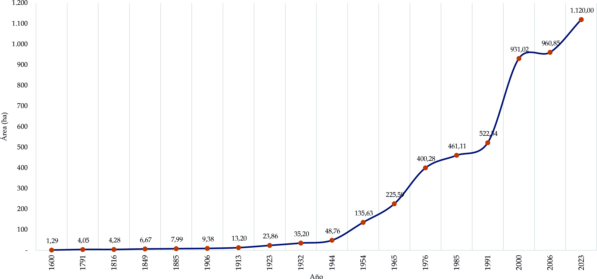
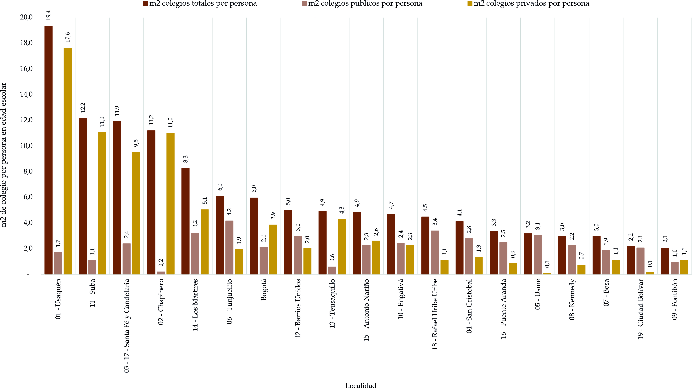
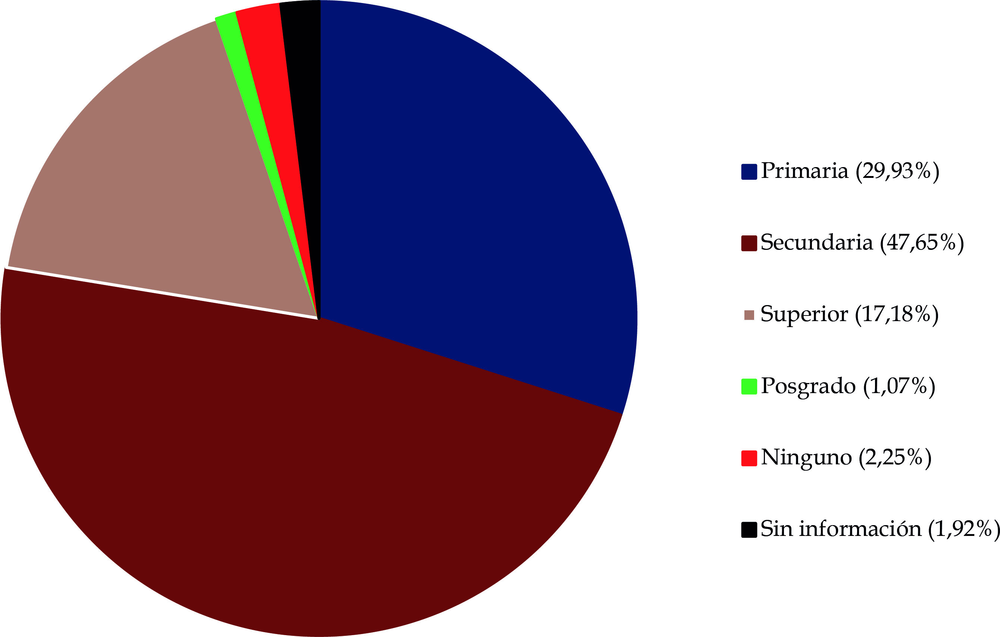
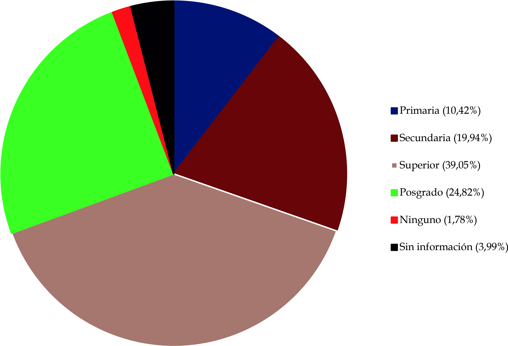
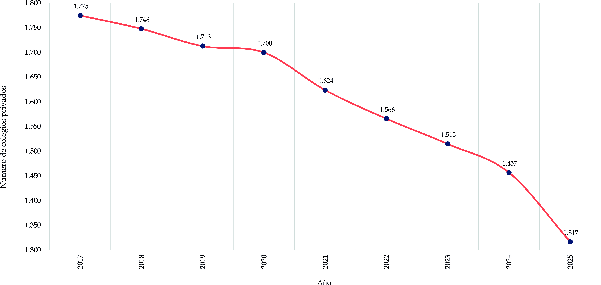
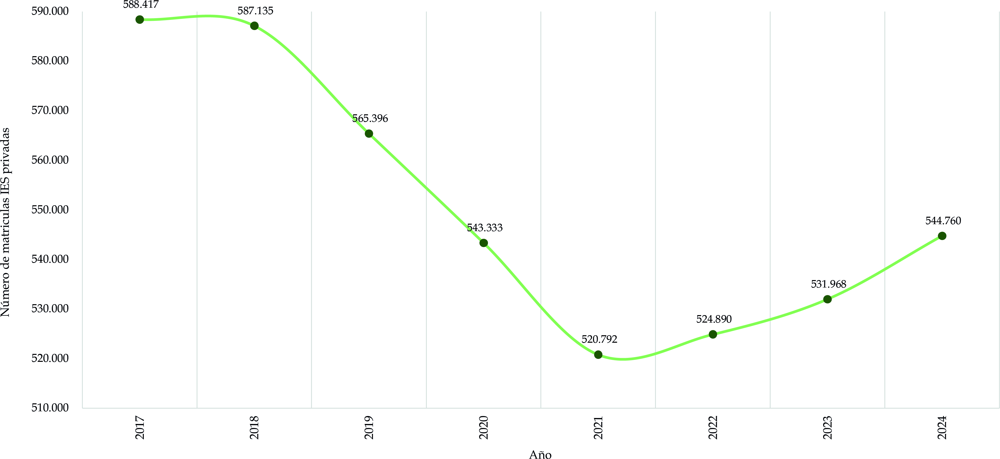

1. Soportes urbanos
1.1. Definición equipamiento
En el caso de Bogotá, la relación entre territorio, equipamientos colectivos, hitos urbanos e identidad adquiere una relevancia particular debido a su complejidad ambiental, su diversidad social y su historia urbana en permanente transformación. Esta articulación permite comprender cómo el espacio físico se convierte en escenario de ejercicio de derechos, construcción de memoria y fortalecimiento de la cohesión social que integra tres dimensiones complementarias:
1. La geografía humana del territorio y su relación con los equipamientos colectivos.
2. Los hitos urbanos como persistencias constitutivas de la ciudad.
3. La identidad urbana como proceso simbólico y experiencial.
En conjunto, estas dimensiones permiten comprender la ciudad como un sistema socioespacial dinámico donde territorio, memoria, la ciudadanía y la cultura se interrelacionan.
1.2. Geografía humana del territorio y los equipamientos colectivos
Desde la perspectiva de la geografía humana, el territorio no es únicamente un soporte físico, sino un sistema socio-ecológico cambiante en el que interactúan dimensiones biofísicas, sociales, económicas y culturales. En Colombia, la Constitución Política de 1991 define al Estado como un Estado Social de Derecho, lo que implica la obligación de garantizar condiciones materiales para el ejercicio efectivo de los derechos fundamentales.
La Ley 388 de 1997, que regula el ordenamiento territorial, establece que la planificación urbana debe garantizar acceso equitativo a infraestructuras y servicios. De esta manera el territorio y la normatividad convergen en una misma finalidad: hacer posible el ejercicio de la ciudadanía. Así, el marco normativo vincula directamente territorio y ciudadanía: la planificación urbana debe asegurar que los equipamientos estén distribuidos de manera equitativa y sostenible. Los equipamientos colectivos son la expresión material de estos derechos en el territorio.
1.3. Significado de un equipamiento
Los equipamientos colectivos son fundamentales para el bienestar comunitario ya que satisfacen necesidades básicas y fomentan el capital social, la identidad y la cohesión de la comunidad. Al actuar como puntos de encuentro mejoran la calidad de vida, generan inclusión social y facilitan la apropiación del hábitat, fortaleciendo el tejido comunitario.
Incidencia en el bienestar comunitario:
· Satisfacción de las necesidades básicas: educación, salud, cultura, recreación, etc.
· Cohesión: funcionan como lugares de encuentro que promueven interacciones sociales y que, agrupan los mismos intereses entre diferentes estamentos sociales. Generan sentido de pertenencia y orgullo.
· Inclusión: ayudan a equilibrar las desigualdades espaciales y sociales. Se comparten las actividades. Manifestación de convivencia.
· Uso del tiempo libre: por ejemplo, los espacios deportivos y recreativos que promueven un estilo de vida saludable y el uso adecuado del tiempo libre, indistintamente.
Estos espacios son pilares para una estructura social funcional y un entorno urbano más humano y equilibrado. No sólo prestan servicios, sino que configuran lugares cívicos donde se ejerce la ciudadanía, se fortalece la cohesión social y se desarrollan prácticas culturales que dan identidad a la comunidad.
Desde la geografía humana estos equipamientos deben entenderse como nodos del sistema socio-ecológico urbano: espacios donde interactúan dimensiones biofísicas, sociales, económicas, políticas y culturales.
Siguiendo a Henri Lefebvre, sostiene que el espacio no es dado, sino construido por prácticas sociales, representaciones y relaciones de poder. Los equipamientos colectivos participan activamente en esta producción del espacio al organizar prácticas sociales, generar centralidades y estructurar dinámicas de encuentro.
1.4. Lugares fundamentales de la sociedad
Se debe resaltar la importancia de los equipamientos como lugares especiales de la ciudad que generan calidad de vida en un contexto urbano porque prestan servicios para satisfacer las necesidades colectivas. Los equipamientos contribuyen a la caracterización del lugar, así como a la identificación de patrones de interacción de la comunidad.
En estos lugares, las relaciones sociales están inevitablemente ligadas a las relaciones espaciales; la forma y organización del espacio actúan como estructura que condiciona y posibilita determinadas dinámicas sociales, y dependiendo del tipo de actividades y servicios que se realizan en los equipamientos colectivos, estos se conforman como lugares que permiten la generación de sentimientos de pertenencia e identidad de grupo.
Los equipamientos colectivos se constituyen en espacios donde los individuos aprenden y ponen en práctica formas de organización y convivencia social, tales como normas, valores, participación política, democracia o prácticas religiosas. Por el tipo de interacciones que allí se propician, podemos afirmar que funcionan como productores de ciudadanía, civilidad y cultura ciudadana; es decir, como ámbitos en los que se configura una red duradera y estructurada de relaciones entre individuos y grupos. Así, se convierten en lugares que propician la acumulación de activos sociales y culturales —como redes de confianza, capital relacional, reconocimiento y habilidades de participación—, los cuales contribuyen a definir la posición de un individuo o de un grupo en la estructura social.
1.5. Equipamientos colectivos y construcción de ciudadanía
La ciudadanía no se limita a tener un documento de identidad o derecho al voto. Implica la posibilidad real de participar, acceder a oportunidades, interactuar con otros y sentirse parte activa de una comunidad. Los equipamientos colectivos hacen posible esa experiencia cotidiana de ciudadanía.
Un colegio público no es sólo un edificio donde se imparten clases: es un espacio donde niñas, niños y jóvenes aprenden a convivir, a respetar la diversidad, a debatir ideas y a desarrollar pensamiento crítico. Allí se forman valores democráticos y se adquieren herramientas para la vida social.
Una biblioteca pública no es únicamente un lugar para consultar libros. Es un espacio de encuentro intergeneracional, de acceso al conocimiento, de inclusión digital y de expresión cultural. Para muchas personas, especialmente en sectores vulnerables, representa una puerta de acceso a oportunidades educativas y laborales.
Los centros culturales y comunitarios permiten el reconocimiento de identidades locales, la promoción del arte, la música, el teatro y la memoria histórica. Son espacios donde la cultura no se consume pasivamente, sino que se crea y se comparte. En este sentido, los equipamientos colectivos fortalecen la cohesión social, reducen brechas y fomentan la participación de la ciudadanía.
1.6. Espacios cívicos: encuentro, diálogo y pertenencia
Uno de los mayores desafíos de las grandes ciudades es evitar la fragmentación social. La desigualdad económica, la segregación territorial y las dinámicas de exclusión pueden generar aislamiento y desconfianza entre grupos sociales.
Los equipamientos colectivos actúan como espacios cívicos que facilitan el encuentro entre personas de diferentes edades, condiciones económicas y trayectorias culturales. Un parque de barrio, por ejemplo, permite la interacción espontánea entre vecinos; un centro deportivo promueve el trabajo en equipo y la disciplina; una casa de justicia acerca los servicios institucionales a la comunidad.
Estos espacios cumplen tres funciones fundamentales:
1. Función integradora: promueven la convivencia y el respeto por la diversidad.
2. Función preventiva: al ofrecer alternativas culturales, deportivas y educativas, reducen factores de riesgo asociados a violencia o exclusión.
3. Función simbólica: fortalecen el sentido de pertenencia y la identidad colectiva.
Cuando la ciudadanía se apropia de estos espacios, los cuida y los utiliza activamente, se generan capital social, redes de confianza y cooperación que fortalecen la democracia local.
2. Educación
Sin duda el sistema educativo es el principal ámbito institucional que tiene la potencia de actuar como un lugar de integración. Con este tipo de equipamientos se ayuda al desarrollo temprano de sentimientos de ciudadanía entre los estudiantes. Los estudiantes se benefician al participar en condiciones de igualdad, dado que emergen identidades compartidas y metas comunes, actitudes positivas de reconocimiento del otro como sujeto de derechos, así como sentimientos de obligación moral que se extienden a compañeros de distinto origen social 1 .
2.1. Historia de la educación en Bogotá: siglos XVI–XIX
Hacia finales del siglo XVI, tras la fundación de Santafé de Bogotá, comenzaron a establecerse diversos espacios destinados al desarrollo de las actividades cotidianas de sus habitantes. Para esa época, la ciudad contaba con numerosas edificaciones religiosas —como las iglesias de Nuestra Señora de Las Nieves, San Agustín, Santa Bárbara y San Francisco, entre otras— que en total sumaban alrededor de quince templos distribuidos en las setenta y ocho manzanas existentes. Esta concentración respondía a la marcada impronta religiosa que caracterizó el periodo colonial.
Caso contrario ocurría con otras clases de equipamientos que se encontraban en una menor cantidad y sustancialmente ocupaban un área menor en esa época como los de gobierno (Cabildo y Real Audiencia), salud (hospital de San Pedro), y educación, representada únicamente por el seminario de San Luis y el colegio y universidad Santo Tomás de Aquino.
El colegio Santo Tomás de Aquino fue el primer equipamiento de educación que tuvo Bogotá y Colombia del que se tenga registro; se fundó en el año 1573 en lo que hoy es la carrera 7a con calle 12B al lado de la extinta iglesia de Santo Domingo. Según Escovar y Peña, en este centro educativo se enseñaba teología, jurisprudencia, filosofía, y medicina, y a lo largo de la historia ha tenido reconocidos personajes dentro de sus graduados como Camilo Torres, Francisco José de Caldas, Francisco de Paula Santander y Atanasio Girardot. Hoy en día la universidad sigue funcionando con varias sedes no sólo en Bogotá, sino a nivel nacional con el nombre de universidad Santo Tomás de Colombia 2.
Por su parte, el seminario de San Luis se ubicaba en la esquina de la calle 7a con carrera 8a, en lo que hoy es el claustro de San Agustín. Este seminario fue el primero de Santafé y fue fundado por Fray Luis Zapata de Cárdenas, empezó sus funciones en el año 1581, fue un espacio concebido bajo la idea de aprender gramática y retórica para la buena doctrina y la enseñanza.
Posteriormente, entre el siglo XVI y XVII, fueron apareciendo otros equipamientos de educación a partir de una fuerte influencia de la Iglesia. Por ejemplo, los jesuitas fundaron el seminario de San Bartolomé y el colegio Máximo de la Compañía de Jesús – Universidad Javeriana, que por aquel entonces funcionaba a escasos metros de la plaza Mayor. Producto de esta orden religiosa en 1767, la junta de temporalidades unificó ambos espacios y se consolidó el colegio Mayor de San Bartolomé.
También los domínicos tuvieron influencia en la fundación y administración de instituciones educativas, como el colegio Mayor de Nuestra Señora del Rosario fundado en 1653, sin embargo, su fundador, el arzobispo Cristóbal de Torres, lo secularizó para evitar la fusión con la universidad Santo Tomás. Este colegio estaba pensado para las personas acaudaladas de la época ya que para postularse se requería acreditar nobleza hereditaria al igual que en el de San Bartolomé. Estos dos colegios posteriormente se fusionarían en 1826 para dar paso a la creación de la Universidad Central en un intento de separar la educación laica del apartado religioso.
Hacia finales del siglo XVIII se fundó el primer colegio femenino de Bogotá, de la Nueva Granada y de todas las colonias americanas. El colegio de la Enseñanza fue toda una revolución en el rol de la mujer de aquella época, que usualmente se enfocaba en actividades domésticas y en la realización de algunas artesanías o de ropa, por lo que la educación formal para las mujeres era prácticamente inexistente. Escovar y Peña indican que el colegio se ubicaba en la carrera 6a con calle 11 en el convento de la Enseñanza y en la calle que tenía este mismo nombre; inició sus actividades en abril de 1783 con 25 alumnas 3 . Desde el siglo XIX el colegio ha cambiado en varias ocasiones de sede, actualmente se encuentra al norte de Bogotá, en las afueras de la ciudad, sobre la calle 201 y es de educación mixta.
Durante el siglo XIX, después de la independencia de Colombia de España, se inició un cambio de paradigma en el cual se fomentaba la educación como una responsabilidad del Estado y no como una función de la Iglesia, como se había llevado a cabo en los años anteriores. Según Escovar y Peña, para esta época se adoptó un modelo monitorial de educación, en donde el maestro le enseñaba a un grupo de alumnos mayores y estos posteriormente enseñaban a los demás, así las cosas, la educación pública en Bogotá se desarrollaba en escuelas primarias y escuelas normalistas, estas últimas se concentraban en la formación de educadores 4.
Las primeras escuelas normales iniciaron su labor en Bogotá en 1822. Y la pionera en la capital fue la escuela normal de Enseñanza Mutua de Bogotá fundada por fray Sebastián Mora, esta fue la primera en aplicar el método de enseñanza mutua, el cual consistía en la instrucción de un único profesor a un grupo de estudiantes y la asistencia al docente por parte de alumnos con mayores conocimientos en ciertas materias; este modelo se ve incluso hasta el día de hoy con los llamados “monitores de clase”.
Para finales de este siglo existían por lo menos tres escuelas públicas en Bogotá: Santa Bárbara, La Catedral, y Las Nieves. Dentro de las condiciones arquitectónicas de estas escuelas se encontraban: ser espacios rectangulares con capacidad de 200 alumnos, paredes blancas y ventanas en las partes altas que permitían la entrada de luz, pero imposibilitando la vista exterior evitando así la distracción de los estudiantes.
Sin duda alguna estas escuelas marcaron un hito relevante en la educación de Bogotá y del país, consolidando el estudio como un derecho en lugar de un privilegio para las personas cercanas al poder, con alta capacidad adquisitiva, y con ascendencia aristocrática e influyente. Además, iniciaron la consolidación de dos aspectos muy importantes que se reflejan a el día de hoy: en primer lugar, fomentar el desarrollo social y económico a partir de la educación del pueblo, y también, la inmersión en los dominios educativos con un rol protagónico respecto a la construcción de espacios y de oportunidades para el intercambio de saberes, haciendo de esta manera posible el acceso al conocimiento para todos los habitantes.
Precisamente, a nivel de educación superior el primer hito relevante sobre educación pública y laica es la fundación de la Universidad Central, creada en 1826 a través de la fusión de los colegios San Bartolomé y del Rosario, como ya se mencionó anteriormente, con base en un decreto nacional que dictaba que el gobierno asumió la dirección de todos los colegios. Esta universidad contaba con facultades de literatura, bellas artes, filosofía, ciencias naturales, medicina, jurisprudencia y teología. Funcionó hasta el año 1861, y aunque tuvo altibajos importantes en su ejecución como proyecto, marcó el inicio de la separación de la educación superior de la Iglesia, que hacía las veces de sector privado. Es importante resaltar que esta universidad no tiene relación alguna con la Universidad Central actual, esta es una institución privada que tiene su origen en el año 1943.
Seis años después del cierre definitivo de la Universidad Central el presidente Santos Acosta crea mediante acto legislativo la Universidad Nacional de Colombia en pro del fomento de la educación superior. Esta universidad, que actualmente tiene su campus sobre la calle 26 y la carrera 30, inició consolidando facultades ya existentes en Bogotá como la escuela de jurisprudencia o la de ingeniería, y adicionando otras. Inició su funcionamiento en el centro histórico de Bogotá en diversos lugares como los conventos de La Candelaria, Santa Inés, y el Carmen, y el edificio San Juan de Dios al lado de la plaza de los Mártires. La Universidad Nacional, hoy en día es el recinto más importante de educación pública superior nacional.
2.2. Principales hitos normativos de la educación en la primera mitad del siglo XX
Entrando en el siglo XX, con el fortalecimiento del marco institucional colombiano y distrital, se promulgaron diferentes instrumentos que fueron perfilando el rol del Estado dentro de la educación. Un ejemplo de esto fue la Ley 39 de 1903, que expone nuevamente la influencia de la religión en los aspectos educativos al afirmar que la educación se dirigirá en concordancia con la religión católica, y dicta algunas disposiciones sobre la instrucción (educación) primaria, secundaria, industrial y comercial, y la profesional.
Luego en 1927 nace el Ministerio de Educación, antes llamado Ministerio de Instrucción y Salubridad Pública, dando funciones que no son educativas a otras dependencias del Estado a través de la Ley 56 de 1927, que además le otorgó la reglamentación, organización e inspección de todos los niveles de instrucción, junto con otras funciones como el levantamiento de estadísticas y la administración y sostenimiento económico de los centros de instrucción que funcionaban en Bogotá.
Además de dar una notable relevancia al tema educativo al priorizarlo y separarlo de otros aspectos de importancia nacional, esta ley impuso a los padres, tutores, cuidadores de niños, o quien haga sus veces, a proporcionar a los niños un mínimo de educación intelectual, moral, religiosa, y cívica, ya fuera en una escuela pública o privada, o desde casa. Además, castigaba el trabajo infantil para los menores de 14 años en caso de no contar con un certificado de educación mínima, propendiendo así en cierta medida por la importancia de la educación sobre el trabajo en edades tempranas.
Posteriormente, en la década de los años 30 se dieron una serie de reformas que redujeron las barreras de acceso a la educación como la Ley 32 de 1936, que prohibió la exclusión de estudiantes por parte de establecimientos de educación por diferencias sociales, raciales, o religiosas, no sólo en instituciones oficiales, sino también en centros educativos privados. Así las cosas, en la primera mitad del siglo XX, se fueron promulgando diferentes instrumentos normativos a nivel nacional que empezaban a reglamentar el tema educativo en todo el territorio colombiano, propendiendo por establecer la educación como un derecho del que deben gozar todos los habitantes del país.
De acuerdo con lo expuesto por la Alcaldía Mayor de Bogotá y el Instituto de Estudios Políticos y Relaciones Internacionales-IEPRI, para el contexto específico de Bogotá se debe resaltar en 1939 el comienzo del funcionamiento de la Dirección de Educación Pública y Propaganda Cultural como órgano dependiente de la Secretaría de Gobierno de Bogotá, que obtuvo como resultado la promulgación por parte del Concejo de políticas enfocadas en la mejora de las condiciones educativas de los ciudadanos.
Sin embargo, el gran salto en la política educativa distrital se produjo en 1954 con la conformación del Distrito Especial 5, figura administrativa que otorgó a Bogotá mayor autonomía para la gestión de sus asuntos fiscales y administrativos, entre ellos la organización del sistema educativo y la administración de los recursos públicos provenientes del Estado para tal fin. En consecuencia, mediante el Acuerdo 26 de 1955 se creó la Secretaría de Educación del Distrito, lo que trajo consigo importantes mejoras en infraestructura, planta docente y cobertura del servicio.
Este hecho fue totalmente indispensable para atender la demanda educativa en Bogotá, que empezaba a consolidarse como una zona de altísima atracción y de gran crecimiento poblacional. Entre 1944 y 1954 la población de Bogotá prácticamente se duplicó, pasando de 485 804 habitantes a 929 917, de la misma manera el área de la ciudad se incrementó en 2148 ha, es decir, 1,75 veces. Para esa época Bogotá estaba presentando una de sus tasas de crecimiento de población más elevadas de su historia, con valores cercanos al 7 % promedio anual, este ritmo era completamente superior al nacional que no llegaba siquiera al 3 %. Por lo tanto, la creación de diferentes mejoras a nivel educativo en esta época significó una situación muy favorable para los habitantes de la ciudad.
Lo anterior, teniendo en cuenta que en los años previos a la constitución de la Secretaría se estaban presentando serios problemas producto de un deficitario sistema educativo que no alcanzaba a cubrir toda la demanda. Continuando con lo descrito por la Alcaldía Mayor de Bogotá y el IEPRI, entre los años 38 y 52, se incrementó notablemente la atención de niños en educación primaria, sin embargo, no era suficiente para cubrir el aumento exponencial de población de ese entonces, ya que para principios de la década del 50 solamente se atendió 1/3 de la demanda de educación primaria en la ciudad por parte del sector oficial.
Respecto a la educación secundaria y superior, era aún más deficitaria en términos de la cantidad de instituciones oficiales que la ofertaban, ya que la mayor parte de este tipo de educación se realizaba en instituciones privadas. La participación del sector oficial dentro de estos niveles educativos se restringía a algunos colegios nacionales como el San Bartolomé y a la Universidad Nacional.
2.3. Universidad Distrital
Teniendo en cuenta el alto ritmo de crecimiento poblacional mencionado, acompañado en conjunto de una expansión económica e industrial considerable, era evidente que la ciudad necesitaba más establecimientos de educación superior pública; si bien es cierto que la Universidad Nacional tenía una amplia capacidad, no era suficiente para atender la demanda de Bogotá, una ciudad sedienta de saberes y de desarrollo social.
Por lo anterior, el concejal de Bogotá Antonio García expuso la necesidad de crear una institución educativa pensada para jóvenes de bajos recursos que les permitiera acceder a la educación superior, así, en 1948, se creó a través del Acuerdo 10 del Concejo el Colegio Municipal de Bogotá, sin embargo, su apertura fue postergada no solamente por falta de recursos sino por el Bogotazo, para ser finalmente inaugurada bajo el nombre de Colegio Municipal “Jorge Eliecer Gaitán”.
Según la Universidad Distrital Francisco José de Caldas, en 1950 se planteó la propuesta de creación de una institución de educación superior ligada al colegio, y la propuesta se materializó el 6 de agosto de ese año con la firma del acta de fundación de la universidad Municipal de Bogotá, que meses más tarde incluiría dentro de su nombre a Francisco José de Caldas. Su primera sede fue precisamente el colegio Municipal, ubicado en la calle 66 con carrera 44, hoy en día sigue funcionando bajo el nombre de Institución Educativa Distrital Jorge Eliecer Gaitán. En esta sede se ofertaron las dos carreras con las que inició la universidad: ingeniería forestal e ingeniería electrónica.
En sus primeros años, la universidad funcionó de manera provisional en distintos inmuebles de la ciudad, algunos de ellos adaptados para uso académico, como antiguas edificaciones de los Ferrocarriles Nacionales. No obstante, a partir de la década de 1960 comenzó a consolidar sus sedes definitivas, varias de las cuales se mantienen hasta hoy, como la ubicada en la carrera 7ª con calle 40 (actual Facultad de Ingenierías) y la sede Venado de Oro (actual Facultad del Medio Ambiente y Recursos Naturales), localizada sobre la avenida Circunvalar. Este proceso de consolidación la situó en proximidad a otros importantes centros de pensamiento como la Universidad de los Andes y la Universidad Externado de Colombia.
Durante los años setentas la universidad funcionó en varias sedes y tuvo varios factores que generaron una crisis que confluyeron en el cierre de esta durante dos años al final de esa década. Sin embargo, en los años ochenta la universidad se reestructuró y reabrió sus puertas, tomando un nuevo aire y empezando a consolidarse como es hoy en día junto con la inauguración de la sede de La Macarena.
Posteriormente, se fueron indexando otras facultades como la tecnológica en la localidad de Ciudad Bolívar, la Facultad de Artes de la Academia de Superior de Artes de Bogotá en el centro de la ciudad y muy recientemente la sede del Porvenir ubicada en la localidad de Bosa. La creación de esta sede no solamente permitió descongestionar la universidad, sino que también hace posible atender una demanda educativa considerable de la zona suroccidental de la ciudad.
A pesar de las dificultades que ha enfrentado —y que aún enfrenta— la Universidad Distrital, es innegable que ha cumplido su papel como universidad pública de Bogotá. A lo largo de su historia ha brindado acceso a la educación superior a más de 110 000 estudiantes, en su mayoría provenientes de hogares de escasos recursos, lo que ha representado una oportunidad real de movilidad social para miles de familias que no pueden asumir los costos de matrícula en instituciones privadas. Esta vocación social se refleja en que más del 95 % de su estudiantado pertenece a los estratos 1, 2 y 3. Actualmente, la universidad ofrece 47 programas de pregrado y 48 de posgrado distribuidos en sus siete facultades, y cuenta con cerca de 30 000 estudiantes.
2.4. Políticas de educación
A lo largo de la segunda mitad del siglo XX continuaba el déficit de educación en la ciudad, si bien es cierto que Bogotá empezó a disminuir su ritmo de crecimiento desde finales de la década de los cincuentas, aún la tasa de crecimiento promedio anual presentaba valores muy superiores respecto al promedio nacional, por lo tanto, a pesar de los esfuerzos de los gobiernos por mejorar las condiciones educativas, en la ciudad se seguían presentando deudas en este tema.
Por lo anterior, en el año 1987, a partir del Acuerdo 9, el Concejo de Bogotá decreta la emergencia educativa que traería como consecuencia la contratación de 2000 docentes y la construcción de 900 aulas, con el objetivo de aumentar la cobertura educativa, además de crear facilidades económicas para que estudiantes que no tenían la posibilidad de costear sus estudios pudieran de igual forma acceder a la educación.
Si bien es cierto que esto demuestra el amplio grado de preocupación que existía ya en la ciudad sobre la importancia de la educación para los habitantes del territorio y la alta responsabilidad de la administración por adoptar un papel protagónico en la atención de las necesidades educativas en todos los niveles, sólo hasta el año 1991, con la promulgación de la Constitución Política de aquel año, se decretó la educación oficialmente como un derecho de los colombianos del cual el Estado es responsable junto con la sociedad y la familia, además, le da un carácter de obligatoriedad entre los 5 y los 15 años de edad y hasta el grado 9no correspondiente a educación básica.
Años más tarde, en 1995 el Decreto 842 del Concejo reestructura la Secretaría de Educación en donde se definen las funciones de la entidad, entre las que se encuentran entre muchas otras el velar por la calidad y la cobertura de la educación, y el diseño e implementación de programas para tal fin. Lo anterior, junto con la descentralización promovida por la Constitución, volvió mucho más relevante el rol municipal dentro de los servicios educativos, dando como resultado la realización de planes sectoriales enfocados en mejorar las condiciones educativas lo cual ha dado resultados importantes en el siglo XXI en términos del incremento en la facilidad de acceso a la educación en todos los niveles.
Así las cosas, desde hace más de veinte años la educación ha sido una de las apuestas clave de las administraciones distritales, poniendo este tema como uno de los pioneros, propendiendo por aumentar la oferta y la calidad educativa y demostrando avances a partir de ciertas cifras e indicadores de gestión.
En la actualidad, el Decreto 650 de 2025 es la carta magna de la educación en Bogotá, esta norma compila toda la normativa vigente del sector educativo y define de forma clara la estructura de este, las funciones de cada uno de sus organismos y de sus entidades adscritas y vinculadas. También identifica responsables y mecanismos de implementación para las diferentes estrategias para el desarrollo integral de la educación en la ciudad.
2.5. Planes sectoriales educativos de las últimas alcaldías
Según la Secretaría de Educación el plan sectorial de educación 2020–2024: La educación en primer lugar, apuntaba a varios objetivos para lograr una mejora continua de la educación en la ciudad. En primer lugar, se pretendía aumentar la oferta de educación inicial incrementando el porcentaje de colegios públicos distritales que ofrecen grados de educación inicial, prejardín, y jardín.
También se planteaba un programa con el objetivo de aumentar el tiempo que permanecían los estudiantes en los colegios y la calidad de este, por lo que se buscó aumentar la cantidad de instituciones educativas que ofrecían jornada única y completa. Asimismo, contenía programas enfocados en reducir la brecha entre la educación proveniente del sector privado y del oficial, teniendo en cuenta que en el año 2019 sólo el 19,8 % de los colegios públicos de Bogotá se encontraba en las categorías más altas del ICFES de acuerdo con las pruebas Saber 11, mientras que la cifra de los privados superaba el 70 %.
Respecto a la educación superior, se hicieron varios avances como fue la creación de la Agencia Distrital para la educación superior, la ciencia, y la tecnología Agencia Distrital para la Educación Superior, la Ciencia, y la Tecnología-ATENEA, cuya misión es liderar programas que mejoren el acceso a la educación superior y a la formación profesional. Una de las principales apuestas formuladas en este periodo fue la iniciativa “Jóvenes a la U”, este programa pretendía dar una oportunidad a jóvenes vulnerables de Bogotá para que accedieran a educación superior y logró entregar 36 000 becas en 4 años, incluyendo a grupos considerables de personas con condiciones diferenciales como algunas discapacidades, víctimas del conflicto armado o personas pertenecientes a grupos étnicos.
De esta manera, miles de bogotanos no solamente pudieron acceder a educación superior y recibir incentivos económicos por semestre, sino que también adquirieron nuevas habilidades para aportar a su comunidad, puesto que se debe hacer una retribución a la ciudad a partir de pasantías de carácter social.
Continuando de forma mejor relacionada con lo expuesto previamente, de acuerdo con lo consignado por la Secretaría de Educación en el año 2024, en el plan sectorial de educación vigente 2024–2027: Una educación que te responde se continúan identificando varias similitudes en retos y promoviendo estrategias similares a las del periodo anterior.
Por ejemplo, se continúa encontrando en el diagnóstico una baja disponibilidad y calidad en los servicios de educación inicial ya que para año 2023 el 33 % de los niños menores de 6 años no contaban con acceso a servicios fundamentales, situación que se presenta especialmente en etapas de desarrollo maternales, caminadores y párvulos. Para lo anterior se propone la ampliación de la cobertura de los servicios, la creación de un sistema de aseguramiento de la calidad y la implementación de un sistema de seguimiento.
Asimismo, se identifica un problema de calidad educativa en términos de la adquisición de conocimientos lo cual se ve reflejado en los altos porcentajes de estudiantes que no alcanzan los desempeños más altos en las pruebas Saber 11, por ejemplo, en el año 2023 el 70 % de los estudiantes no alcanzó niveles de desempeño alto, lo cual refleja la gran carencia que tienen los jóvenes de Bogotá en términos de reconocer contextos históricos y el marco institucional que los cobija tanto a nivel distrital como nacional.
Por lo anterior, se propone una serie de acompañamientos institucionales y materiales para el aprendizaje, la formación docente, la implementación de jornadas únicas y complementarias, y la edificación de estructuras de calidad (construcción de 16 nuevos colegios y reconstrucción o renovación integral de otros 12 ya existentes).
Adicionalmente, este plan estratégico concluye que el sistema educativo no garantiza una trayectoria continua y completa sobre todo para poblaciones vulnerables. Por ejemplo, para el año 2022 el 48 % de los estudiantes graduados en educación media no pudo continuar de manera inmediata la educación superior y la principal causa (dentro de muchas) fue la falta de dinero y los costos educativos elevados.
Para mitigar esta situación, se proponen alianzas orientadas a la construcción de proyectos de vida, la implementación de una metodología que fortalezca los criterios meritocráticos en el programa Jóvenes a la E —iniciativa distrital que financia el acceso y la permanencia en educación superior y que reemplazó al programa Jóvenes a la U—, así como la construcción de multicampus educativos en las localidades de Kennedy y Suba, ampliando así la cobertura de educación superior en 29 000 cupos adicionales.
Finalmente, se abordan las condiciones desfavorables de convivencia que afectan el aprendizaje como las situaciones de violencia, por lo que se propone la mejora en la conciencia y salud mental de los niños a través del fortalecimiento de habilidades emocionales. Se plantea la estrategia Entornos escolares inspiradores, que tiene como objetivo reducir factores de riesgo en los territorios aledaños a las instituciones educativas con cinco líneas de acción: seguridad, convivencia, y contención de violencia, mejoramiento del espacio público y participación comunitaria.
2.6. Actualidad de la educación de Bogotá
2.6.1. Educación preescolar, primaria, básica, y media
En la actualidad Bogotá tiene más de 2000 instituciones de educación preescolar, primaria, básica y media. De estas, el 67 % son de carácter privado y el restante 33 % oficiales. Se destacan las localidades de Suba, Engativá y Kennedy, quienes juntas concentran una gran cantidad de los colegios de Bogotá, en estas 3 localidades se encuentran más del 40 % de establecimientos, concentran más del 45 % de los colegios privados y el 31 % de los oficiales.
Al hacer un análisis espacial de los colegios oficiales de Bogotá es posible identificar que estos se encuentran fuertemente concentrados en las localidades del sur de la ciudad como Bosa, Kennedy, Ciudad Bolívar, Rafael Uribe Uribe, y San Cristóbal, mientras que los colegios privados tienen una distribución espacial más uniforme tanto en las localidades del norte como del sur. Es posible conocer datos e indicadores de los colegios en Bogotá en DATACIVILIDAD.
En concordancia con lo anterior, las localidades que menor oferta educativa tienen en términos de colegios son Chapinero, Teusaquillo, y Los Mártires, sin embargo, es importante contrastar esta información con la demanda que tienen estas localidades respecto a educación. A diferencia de la población universitaria, la que está en edad escolar usualmente tiende a asistir a establecimientos educativos cerca de su sitio de residencia, por lo tanto, una aproximación para conocer qué tan bien servidas respecto a educación están las localidades es comparar la cantidad de colegios con la población de 0 a 19 años.
Para el año 2018, de acuerdo con el Censo Nacional de Población y Vivienda, en Bogotá había cerca de 1 900 000 de personas entre 0 y 19 años, por lo que esa era la demanda aproximada que debían satisfacer los colegios en Bogotá, ahora, teniendo en cuenta que desde esa época hasta la actualidad la población de la ciudad ha incrementado en 600 000 habitantes y ha reducido sus cifras de natalidad, muy seguramente la demanda actual escolar es similar o un poco menor a la de 2018.
Así las cosas, es posible establecer que las localidades con mayor presión respecto a la cantidad de estudiantes que deben atender si las personas en edad educativa sólo asistieran a los colegios de la localidad de residencia son Bosa y Ciudad Bolívar, con 1536 y 1357 estudiantes por colegio respectivamente, mientras que las de menor son Los Mártires, Antonio Nariño, Teusaquillo, y Barrios Unidos, cada una con menos de 500 estudiantes por colegio.
Esto quiere decir que, en la ciudad, hay localidades como Teusaquillo en donde hay una baja oferta escolar producto de una baja demanda, lo anterior teniendo en cuenta que hay sectores de la ciudad con una mayor proporción de edades fuera de la escolaridad como es el caso de esta localidad.
Esta información se vuelve más valiosa aún al cruzarla con datos de área, es decir, si bien es cierto que una localidad como Kennedy tiene una presión muy fuerte sobre sus establecimientos educativos, esta puede ser aún más crítica al hacer un análisis espacial respecto a la cantidad de área de sus colegios, porque a pesar de que es la segunda localidad que más colegios tiene en la ciudad, posee una importante proporción de establecimientos educativos de carácter privado con un área bastante pequeña que difícilmente tendrían la capacidad de atender a los 1041 estudiantes en promedio que le corresponden a cada institución educativa de la localidad.
El área ocupada por los equipamientos de educación en la ciudad ha incrementado de forma importante en los últimos setenta años, como ya se expresó, en la época de la Colonia y los comienzos de la República la fuerte influencia de la Iglesia hacía que el área no residencial se destinara para iglesias principalmente o equipamientos de gobierno, dejando la salud y la educación muchos pasos atrás. Desde el siglo XVII hasta principios del siglo XX en promedio el 1,5 % del área de la ciudad estaba ocupada por instituciones educativas.
Sin embargo, desde esa primera mitad del siglo XX Bogotá empieza a tener un crecimiento de población que obligó en una misma proporción al incremento de su huella urbana y asimismo de la infraestructura de bienestar para atender la demanda educativa. En promedio, desde 1954 los colegios de la ciudad han ocupado el 2,38 % de la huella, y junto con la gran expansión del área urbana de Bogotá este uso del suelo ha crecido significativamente. Como se puede observar en el gráfico, en 1954 el área en colegios era de sólo 135 ha, y en la actualidad está área es mayor a 1100 ha.
Gráfico 3. Evolución del área en colegios en Bogotá 1600-2023

Fuente: Elaboración Sociedad de Mejoras y Ornato de Bogotá con base en cálculos SMOB; SDE (2025)Sin duda alguna, entre 1991 y el 2000 se dio el mayor incremento en infraestructura de educación de la ciudad, lo que demuestra la manera en la que la autonomía municipal, los planes sectoriales y la preocupación por la atención educativa como un derecho fundamental se consolidaron hasta inicios del siglo XXI.
Asimismo, entre el 2006 y la actualidad se han edificado megaobras de infraestructura que amplían el área educativa y, además, buscan mejorar las condiciones bajo las cuales se desarrollan los procesos pedagógicos, cambiando desde un modelo que pretendía incluir la mayor cantidad de aulas y de cubrir a como diera lugar la demanda educativa a un modelo que se preocupa por ajustarse a los diferentes enfoques de aprendizaje y enseñanza a través de la inclusión de escenarios deportivos, aulas con alta tecnología, bibliotecas, entre otros, con el objetivo de enriquecer los procesos pedagógicos de la educación preescolar, básica, y media.
Un ejemplo de lo descrito anteriormente fue el fructífero periodo de la administración del 2019 al 2023 que construyó y dejó en funcionamiento 35 colegios, 25 en construcción, y 10 más en estudios, que junto con los proyectados por la administración actual representa una mejora constante en la oferta educativa, en la ampliación de la infraestructura y sobre todo en la funcionalidad de estos establecimientos.
Una muestra de lo descrito es el Colegio Distrital de Arborizadora Alta, que fue demolido y sobre el mismo lote se edificó una infraestructura con un nuevo enfoque adicionando espacios como teatrino, aulas de danza, terrazas transitables, zonas recreativas, entre otros, que benefició a más de 1600 estudiantes.
Continuando con el análisis de la oferta educativa versus la demanda por localidad, es relevante mencionar que de las 1120 ha que tiene Bogotá en colegios, la mayor parte corresponde a establecimientos privados (65 %), por ejemplo, la localidad de Suba es la que mayor cantidad de área tiene en colegios, con 339 ha, de las cuales 309 ha corresponden a colegios privados y 30 a oficiales, situación que se da de manera similar en Usaquén.
En concreto, estas dos localidades del norte de Bogotá tienen aproximadamente el 50 % del área educativa de la ciudad, representada principalmente en los megacolegios privados que se ubican hacia las afueras del perímetro urbano, sin embargo, ambas localidades sólo tienen el 21 % de la población en edad educativa. La diferencia de área de estas dos localidades respecto a las demás es bastante importante, porque si bien es cierto que en la realidad los colegios de una localidad no atienden exclusivamente la demanda de esta, sí es cierto que la proporción de hogares bogotanos que tienen la capacidad adquisitiva y sobre todo que pueden disponer de importantes sumas de dinero para pagar el colegio de sus hijos es bastante reducida.
Por lo anterior, seguramente un porcentaje pequeño de los estudiantes de Bogotá son los que pueden disfrutar de casi la mitad del área de colegios, lo cual es bastante diciente respecto a la desigualdad que se vive en la ciudad en todos los ámbitos, incluida la educación.
Lo anterior se demuestra en la cantidad de m2 de colegios por persona en edad escolar que tiene cada localidad asumiendo nuevamente que los colegios que se ubican dentro de la localidad atienden la demanda de esta. Por ejemplo, Usaquén tiene en promedio 19,4 m2 de colegios por cada persona en edad escolar y es la localidad superlativa respecto a este indicador, seguida de Suba con 12,2, Santa Fe y La Candelaria con 11,9 y Chapinero con 11,2 como se puede ver en el siguiente gráfico.
Adicionalmente, en estas localidades los colegios privados son los principales contribuyentes al aporte de área, por ejemplo, en Chapinero solamente hay 0,2 m2 de colegios oficiales por persona en edad escolar, lo cual es una muestra de la baja participación de este sector educativo en el norte de la ciudad, repitiéndose la misma situación en el resto de las localidades mencionadas.
Gráfico 4. Indicador de m2 de colegios por persona en edad escolar para cada localidad de Bogotá

Fuente: Elaboración Sociedad de Mejoras y Ornato de Bogotá con base en cálculos SMOB; SDE (2025)Caso contrario ocurre en localidades del sur y el occidente de la ciudad, en donde se encuentran zonas con menos de 3 m2 de colegios totales por persona como ocurre en Ciudad Bolívar y Fontibón. Además, la constante en las localidades de estas zonas mencionadas es que la mayor parte del área sea aportada por instituciones oficiales, por ejemplo, de los 3 m2 por habitante que tiene la localidad de Kennedy en colegios solamente 0,7 m2 son aportados por colegios privados, esto se debe a que es un territorio con una gran cantidad de establecimientos privados pero de bajo tamaño, sus 181 colegios privados, ocupan solamente 20 ha, en cambio los 77 colegios oficiales que tiene la localidad ocupan más de 60 ha.
Por lo anterior, es posible concluir que los colegios oficiales del sur de la ciudad son vitales para las localidades que se ubican en esta zona ya que tienen el espacio para atender una mayor cantidad de estudiantes y juegan un papel crucial para el desarrollo social y educativo de la ciudad.
2.6.2. Educación superior
En Bogotá existen cerca de 120 instituciones de educación superior de diverso carácter académico como universidades o instituciones técnicas. Al igual que con los colegios, en la ciudad la mayor parte de instituciones de educación superior son de carácter privado, respecto a la oferta pública las opciones se limitan al Servicio Nacional de Aprendizaje-SENA, con 19 sedes distribuidas en toda la ciudad, la Universidad Nacional, la Universidad Pedagógica, la Universidad Nacional Abierta y a Distancia, la Escuela Superior de Administración Pública, la Universidad Militar Nueva Granada, el Colegio Mayor de Cundinamarca y, claramente, la Universidad Distrital.
Todas estas universidades cuentan con matrícula gratuita para estudiantes de estratos 1, 2 y 3 que accedan a programas de pregrado, en el marco de la política de gratuidad en educación superior, la cual contempla la financiación total del valor de la matrícula en instituciones públicas para estudiantes que cumplan determinados criterios socioeconómicos. En este sentido, representan una opción clave para facilitar la transición de la educación media a la educación superior en los grupos más desfavorecidos de la ciudad. No obstante, es importante señalar que el acceso a estas instituciones incorpora un componente meritocrático, pues se emplean distintos mecanismos de selección, como exámenes propios de admisión o los resultados de las pruebas Saber 11.
Esta dinámica hace que los estudiantes que tengan opciones para una mejor preparación para estas pruebas tengan mayor probabilidad de poder acceder a las instituciones públicas, sin embargo, como ya se ha expresado, en los últimos diagnósticos abordados por los planes sectoriales de educación se ha identificado un bajo rendimiento de una importante proporción de estudiantes de colegios oficiales en este tipo de pruebas, por lo que si bien es cierto que es importante premiar a quienes a través de sus conocimientos se ganan un cupo, esta situación muchas veces implica que este selecto grupo esté relacionado con hogares que tienen la posibilidad de pagar un colegio privado, clases particulares, exámenes preparatorios, entre otros, con el objetivo de que los jóvenes puedan acceder a la educación superior.
Lo anterior hace patente la importancia de mejorar la calidad de la educación en colegios oficiales y la necesidad de una preparación por parte de estas instituciones a sus estudiantes para poder obtener mejores resultados en los exámenes que permiten el acceso a las universidades públicas con el objetivo de que el tema económico no represente un factor determinante en la “meritocracia” evaluada.
De forma contraria a los colegios, las universidades no se encuentran distribuidas por toda la ciudad, sino que se concentran específicamente en el sector nororiental de la misma, como lo es la localidad de Santa Fe, La Candelaria, Chapinero, Teusaquillo, y Barrios Unidos. Esta situación se da entre otros factores porque en estas localidades se centra el sector de servicios de la ciudad, que, a su vez, se explica por la cercanía con el origen geográfico de la ciudad en el centro histórico, en donde se ubican algunas de las instituciones más importantes como la Universidad Externado, la Universidad de los Andes o algunas sedes de la Universidad Distrital.
Si bien es cierto que hoy en día cada localidad tiene infraestructura y servicios para poder llevar a cabo su dinámica de vida a través de bancos, establecimientos de comercio, hospitales, entre otros, las universidades tienden a ser la excepción ya que estas no están pensadas para atender la demanda educativa de cada localidad de forma específica, sino que se ubican en lugares centrales con el propósito de que los estudiantes puedan acceder independientemente del lugar de la ciudad en el que vivan.
Hay algunos casos excepcionales en los que no se cumple lo expresado anteriormente, como es el caso de las múltiples sedes del SENA que se encuentran en diversos puntos de la ciudad, o las sedes de Ciudad Bolívar y el Porvenir de la Universidad Distrital que se ubican en zonas apartadas del centro de Bogotá y precisamente están pensadas para atender la demanda educativa de muchos jóvenes de la zona suroccidental de la ciudad. En esta misma línea, existen intenciones de crear centros de educación superior en las localidades de Suba y Kennedy, estas opciones son eficientes no solamente por aumentar la oferta educativa, sino también disminuir tiempos de desplazamiento y, en general, mejorar la calidad de vida de los habitantes de estas localidades.
Es indispensable hacer énfasis en que el acceso a la educación superior es clave para el desarrollo local, tal como lo afirma el Banco Mundial. La educación terciaria es clave para la sostenibilidad económica ya que impulsa el crecimiento económico y la reducción de la pobreza al aumentar el nivel de calificación de la fuerza laboral, beneficiando así no solamente a la población de manera individual sino colectiva. Lo mencionado va de la mano con la teoría del capital humano, que propone que la inversión en salud y educación puede impulsar el crecimiento y el desarrollo por el aumento de las capacidades productivas.
Para el caso de Bogotá, de acuerdo con la información dada por el censo de 2018, el 30% de los habitantes tienen algún tipo de educación superior, y el 6,2 % un título de posgrado (especialización, maestría, o doctorado). El grueso de la población se centra en educación secundaria ya que prácticamente el 40 % de los bogotanos son bachilleres, sin embargo, esta información cambia si se abordan los datos de una forma específica por localidad.
De acuerdo con el siguiente gráfico, correspondiente a Ciudad Bolívar, prácticamente el 50 % de los habitantes de esta localidad son bachilleres, mientras que una proporción inferior al promedio de Bogotá tiene educación superior, y aquellos que tienen posgrado representan aproximadamente el 1 %.
Gráfico 5. Distribución del grado de escolaridad de habitantes de la localidad de Ciudad Bolívar

Fuente: Elaboración Sociedad de Mejoras y Ornato de Bogotá con base en cálculos SMOB; DANE (2018)
Ahora, al contrastarse con los datos de la localidad de Chapinero se puede observar una distribución totalmente distinta, ya que menos del 20 % de las personas que habitan en este sector de la ciudad tienen como mayor logro educativo el bachillerato, y su educación superior está muy por encima del promedio de la ciudad ya que el 63,87 % de sus habitantes tiene educación superior (pregrado y/o posgrado).
Gráfico 6. Distribución del grado de escolaridad de habitantes de la localidad de Chapinero

Fuente: Elaboración Sociedad de Mejoras y Ornato de Bogotá con base en cálculos SMOB; DANE (2018)
De acuerdo con lo establecido anteriormente, es posible identificar de forma clara las diferencias educativas que hay en diversas zonas de la ciudad provocadas por un sinfín de situaciones que hacen que los jóvenes no accedan a educación terciaria en los sectores más desfavorecidos de la ciudad, en donde las prioridades no son precisamente las educativas, sino en muchos casos la solución de las necesidades del día a día.
Por lo anterior, se hace pertinente la mejora continua de la formación desde la secundaria, la preparación para el acceso a la educación superior pública y el aumento de la oferta educativa con el objetivo de mejorar las cifras presentadas, acompañado de políticas públicas que favorezcan la formación con el objetivo de empoderar a las comunidades que finalmente harán su respectiva retribución al distrito a través de una población económicamente activa y capacitada.
2.7. Futuro de la educación en Bogotá
La mejoría en los indicadores presentados sólo es posible de dos maneras: aumentando la oferta a través de la construcción de nueva infraestructura, ampliación de la existente, optimización de colegios antiguos, entre otros, o, disminuyendo la demanda, es decir con la existencia de una menor cantidad de personas en edad escolar. Al parecer en la actualidad se están dando ambas situaciones, como ya se ha mencionado los gobiernos distritales siguen apuntando a mejorar y construir nuevos colegios, y, además, en los últimos años la demanda de servicios escolares sobre todo en los primeros grados ha disminuido producto del descenso de la natalidad que experimenta Colombia y especialmente Bogotá.
Para entender la dimensión del asunto, vale la pena recordar que en 2015 nacieron 102 795 niños en la ciudad, y en el 2025 poco más de 55 000, lo que representa una disminución del 46,5 % en diez años, lo anterior, en primera instancia, significa una mejoría a futuro en términos de la cantidad del área en equipamientos educativos de los cuales pueden disfrutar los niños bogotanos, sin embargo, representa también una presión importante para los establecimientos privados, recordando que las matrículas y pensiones son los principales ingresos de estas instituciones, por lo que una menor cantidad de estudiantes representa a su vez una disminución de ingresos económicos y pone en vilo la sostenibilidad y viabilidad económica de este tipo de instituciones.
Al igual que el número de nacimientos, el número de matrículas en colegios privados ha disminuido notablemente en la última década, según cifras de El Tiempo, en 2017 se matricularon 536 109 estudiantes, mientras que en el año 2024 se matricularon 431 238; esta caída de matrículas se debe a varios factores. En primer lugar, de manera clara el descenso de la natalidad hace que haya una menor cantidad de posibles estudiantes lo cual representa un menor número de matrículas.
En segunda instancia, el pago de una institución de educación privada se ha vuelto más complejo para los hogares en los últimos años debido al mayor costo de vida asociado a los altos niveles de inflación. Entre 2021 y 2025 se acumuló una inflación del 38,32 %, que genere que cada vez pagar matriculas y pensiones en instituciones privadas sea más complejo para las familias bogotanas.
En tercer lugar, se deben considerar las diversas mejoras que se han tenido en materia de educación pública en los últimos años, en donde la mayoría de los establecimientos ofrecen amplios espacios en donde se fomenta el deporte, la cultura, la preparación para la vida laboral y, además, se otorgan a los estudiantes distintos apoyos como el transporte y la alimentación, por lo que muchas familias deciden optar por confiar en la educación pública.
La situación descrita anteriormente se ve reflejada en el cierre de colegios privados que se ha dado en los últimos años, entre 2017 y 2025 se cerraron más de 450 instituciones privadas en Bogotá como se ve en el gráfico 7, lo cual no sólo representa un reto en términos económicos para este sector, sino también, un aumento en la presión sobre el sector oficial para adoptar una proporción de estudiantes de los establecimientos cerrados, por lo que una mejora continua y mayores esfuerzos para la dotación de equipamientos educativos en Bogotá es clave para el sostenimiento social y el desarrollo de conocimientos.
Gráfico 7. Evolución de la cantidad de colegios privados en Bogotá 2017-2025

Fuente: Elaboración Sociedad de Mejoras y Ornato de Bogotá con base Manuel Chacón Orduz, en columna El Tiempo (2026)Esta situación podría golpear a futuro también la matrícula en las instituciones de educación superior, si bien es cierto que a las universidades no ingresan únicamente personas recién salidas del colegio o jóvenes, la mayor proporción de estudiantes de las instituciones de educación superior sí se concentra en este grupo poblacional, por lo que esta situación que están viviendo los colegios puede replicarse en las universidades, especialmente en las privadas.
Lo anterior se explica porque, de manera similar a lo que ocurre con los colegios, costear una Organización Educativa Formalmente Reconocida-IES, privada representa un reto para muchos hogares bogotanos. Los costos semestrales pueden superar los 30 000 000 de pesos solo en matrícula. A esto se suma el descenso en los nacimientos —que ya está teniendo repercusiones en el sector, como se ha venido señalando—, así como la creciente dificultad de los hogares para asumir los costos de este tipo de instituciones.
Si bien es cierto que el total de ingresos de nuevos estudiantes en las IES privadas en Bogotá no ha disminuido en los últimos años, el total de matrículas sí lo ha hecho como se puede ver en el siguiente gráfico, en donde después de la pandemia han ido aumentando progresivamente el total de matrículas, sin embargo, la cifra aún está lejos de acercarse a los valores de 2017.
Gráfico 8. Evolución del número de matrículas en primer semestre de las IES privadas en Bogotá

Fuente: Elaboración Sociedad de Mejoras y Ornato de Bogotá con base en cálculos SMOB; Ministerio de educación (2017–2024)Otro aspecto para tener en cuenta es un cambio de paradigma generacional en el cual ya no se considera como requisito esencial para la realización de la persona y el sentimiento de éxito el tener un título universitario, sobre todo teniendo en cuenta que cada vez son más los jóvenes que consideran innecesario estudiar durante 5 años o más para salir a un mercado laboral que no ofrece las mejores condiciones, y que causa cierto grado de frustración cuando en muchas ocasiones no se mejoran las condiciones de vida de las personas a pesar de haber invertido tiempo y esfuerzo en su formación profesional. Por lo tanto, muchos jóvenes en la actualidad no consideran el ingreso a la educación superior no solamente porque no puedan costearla o por falta de interés, sino porque no ven en la continuación de su educación la oportunidad de mejorar su nivel de vida.
Por lo anterior, además de pensar en la mejora y aumento de infraestructura en los planes de educación, también se deben sentar bases claras para políticas efectivas que permitan un tránsito más sencillo de la educación secundaria a la terciaria, la formación de lazos armoniosos entre la finalización de los pregrados y los primeros trabajos, que fomenten los salarios justos de acuerdo con el nivel académico de las personas y que permitan el acceso a la educación superior para todos los sectores sociales. Todo esto con el objetivo de no llegar a ser un país y una ciudad con índices de edad avanzada y, además, con índices de retraso en términos de desarrollo social y económico, ya que con cada uno de estos tipos de desarrollo tiene que ver la educación.
3. Salud
3.1. El equipamiento humano del primer colectivo hospitalario en Bogotá
Los equipamientos colectivos son fundamentales para el bienestar comunitario ya que satisfacen necesidades básicas (salud, educación, recreación, cultura) y fomentan el capital social, la identidad y la cohesión de la comunidad. Mariana Patiño Osorio.
La importancia de la restauración del primer hito urbano de salud en Bogotá fue ya bien descrita en esta misma obra por la arquitecta Mariana Patiño Osorio, directora de la Oficina de Patrimonio Urbano Colombiano:
Con la restauración y puesta en uso del complejo hospitalario del sur de la ciudad, llamado Ciudad Salud, con la edificación del San Juan de Dios se reafirma el compromiso con la conservación del patrimonio histórico y la modernización de espacios destinados al bienestar y a la salud de los ciudadanos. Es un ejemplo de un equipamiento donde la edificación experimenta aún la forma del pasado, que había perdido sus funciones, pero que físicamente podía seguir funcionando, condicionando el entorno urbano, constituyéndose siempre en un foco importante de sí mismo y de la ciudad.
En este sentido, es importante revisar los términos en que se originó este hito urbano y, en particular, entender la importancia del equipo humano que lo hizo posible (y en un momento dado imposible) para definir adecuadamente los principios que asegurarán su futuro.
El hospital San Juan de Dios de Bogotá tiene una tradición de cerca de 450 años. La primera fundación de esta institución se hizo en octubre 21 de 1564 cuando, de acuerdo con el médico e historiador Andrés Soriano Lleras, el arzobispo de ese entonces en Santafé, fray Juan de los Barrios y Toledo, firmó la escritura pública en la que constaba la:
donación de las casas de su propiedad situadas en la calle de San Felipe, en una de las cuales habitaba, y que ocupaban el lugar que hoy ocupa la Catedral y la Sacristía de la misma, en la carrera 6ª, esquina de la calle 11. En dicha escritura decía el Arzobispo que en ocasiones anteriores había tratado de fundar un hospital, primero en el sitio en donde había estado el Monasterio de Santo Domingo y luego en las casas que habían sido del licenciado Francisco Brizeño (sic), Oidor de la Real Audiencia, pero que a pesar de su gran deseo de hacerlo y de costearlo no había sido posible por los obstáculos en los impuestos por numerosas personas 6.
Este primer centro asistencial, que tuvo tantos impedimentos anónimos, se llamó Hospital de San Pedro y sería administrado bajo el patronato de obispos y arzobispos de Santafé, y de deanes, chantres y canónigos de la Catedral. Sin embargo, a pesar de esta cantidad de supervisores, apenas diez años después, en 1574, el Real Consejo de Indias tuvo que comisionar al oidor y licenciado Francisco de Anuncibay, para que revisara los diezmos que correspondían a esta corporación.
Gracias a esta operación, el hospital pudo sobrevivir a su primer cambio de siglo, aunque ya en 1603 se hicieran públicas las quejas contra el padre Bezerril, mayordomo de la institución, quien alojaba a algunos de sus conocidos en las instalaciones a su cargo. Se aducía también que no había suficientes suministros y faltaba el control de las autoridades eclesiásticas, y que las rentas anuales no subían de “1200 pesos de oro bajo” 7 De esta suma, más del 70 % se gastaba en la botica (400 pesos) y en el personal (450 pesos), entre quienes se mencionaba un solo médico, con salario anual de 100 pesos, “a quien (se) acusaba de no visitar en hospital sino cada tres o cuatro días” 8.
Aunque el padre Bezerril fue destituido por el arzobispo Bartolomé Lobo Guerrero, fundador del Seminario en las inmediaciones de la Catedral que los jesuitas dirigirían a partir de 1604 bajo el nombre de Real Colegio Mayor y Seminario de San Bartolomé, los malos manejos siguieron afectando el nombre del hospital San Pedro a cargo de la arquidiócesis santafereña. Entretanto, el buen suceso de los hospitales a cargo de la Orden Hospitalaria de San Juan de Dios en España, y particularmente en Cartagena de Indias, le abría a dicha orden las puertas en el hospital de Santafé.
En el año de 1635 arriba a Santafé fray Gaspar Montero, a quien fray Cristóbal de Torres —fundador del colegio Mayor de Nuestra Señora del Rosario— dio el manejo de las rentas del hospital y nombró prior y médico de los frailes, aunque supeditándolo a un acuerdo firmado el 20 de julio de ese año en el que se estipulaba que a los frailes “se les recibía como meros administradores, “ministros y sirvientes”, sin tener propiedad alguna (del hospital) ni de las limosnas a él destinadas” 9.
Todavía en 1723 el hospital llevaba oficialmente el nombre de San Pedro, de acuerdo con una Real Cédula firmada en Aranjuez el 15 de mayo de ese año por Felipe V, en donde se refiere:
la petición del Prior General de la Orden de San Juan de Dios (Antonio González de Lugo, pues fray Gaspar ya había fallecido), para trasladar el Hospital de San Pedro de la ciudad de Santa Fe en el Nuevo Reino de Granada, que se halla situado en el centro de ella e inmediato a la Iglesia Catedral y Colegio de la Compañía, en un pequeño espacio sin capacidad suficiente para atender toda clase de enfermos, incluyendo eclesiásticos, seculares e indios que trabajaban en las minas de plata de Margarita, asistiendo a locos, transmitiéndose enfermedades los unos a los otros y a su vez transmitiendo enfermedades a los habitantes de la ciudad 10 .
El traslado se hizo a la calle de San Miguel, cerca al río San Francisco, y allí se instaló bajo la dirección médica de fray Pedro Pablo Villamor, quien falleció en 1729, “sucediéndole en la dirección del hospital fray Juan José Merchán, quien donó diez mil pesos al nosocomio en su herencia. A Merchán le sucedió el médico fray Antonio de Guzmán quien, con el mismo interés de sus antecesores, continuó la construcción del hospital, la cual quedó terminada en 1737. El hospital se llamó entonces de Jesús, María y José, y después de San Juan de Dios entre las llamadas calles 11 y 12 y carreras 9a y 10a” 11.
Algunos días después de su primer arribo a Santafé, en 1761, José Celestino Mutis 12 comentaba en relato epistolar a un corresponsal anónimo sus impresiones sobre las artes terapéuticas de fray Antonio de Guzmán:
Desde que el mundo está asistido por médicos no hubo tragedia parecida a la que se ha representado en Santafé, ciudad donde la medicina estuvo estancada por espacio de 40 años en manos de un Fraile de San Juan de Dios 13, a quién hicieron oráculo la necesidad ejemplar de afortunados, su rara industria, y cuyo carácter podría servir de asunto a una memoria igualmente dilatada y curiosa. Sólo esta causa, de quien nadie acabaría de admirarse, pudo mantenerme casi ocioso por espacio de dos meses en un pueblo lleno de enfermos y asistido por un solo médico, pues la enfermedad del protomédico 14 y la poca confianza que manifestaban las gentes a D. Juan Courtois 15 y a D. José Ruesta16 , eximían a los 3 médicos de las tareas prácticas, recayendo todo el peso de la ciudad sobre el P. M. F …17 y un su ayudante de la misma religión y estofa, a quien iba industriando en el ejercicio médico los ratos que podía excusarlo de la botica. Las noticias más individuales son muy curiosas, y quedan reservadas para un escrito, que voy preparando con el título de `Estado de la Medicina en Santafé de Bogotá´18.
A pocos días se mudó el teatro. La resolución de algunos sujetos de alta reputación dio motivo para que manifestasen al público la disminuida confianza con que la necesidad la entregaba a las manos del padre maestro. No tuvo poca parte para esta mudanza ciertas máximas que sirvieron de fundamento a la ruina del oráculo, quien jamás pudo penetrar sus resultas, tan solamente evitables en los principios. Solo mi entereza apoyada con el parecer del Virrey pudo sostenerme firme en la decisión de un lance tan crítico…. Todo el trabajo de la ciudad está repartido entre nosotros, Navarro 19 y yo, con una armonía tal como corresponde en dos hombres que igualmente miran por su honor, celo, intereses y reputación de la facultad que profesan 20.
No fue Mutis en ese momento muy elogioso con fray Antonio, aunque, años después, avalaría a uno de sus discípulos, el padre fray Miguel de Isla, como su alumno y primer catedrático de medicina del colegio Mayor de Nuestra Señora del Rosario en 1801. En estos términos, se podría considerar al hospital San Juan de Dios como el primer hospital universitario en la historia de Colombia.
El hospital San Juan de Dios continuó en todo el siglo XIX, con el aporte de los médicos formados en Bogotá y diferentes capitales europeas, con la incorporación de los avances clínicos y técnicos de la medicina científica, y con la participación de varios de sus facultativos en la fundación de diferentes sociedades como la Sociedad de Medicina y Ciencias Naturales de Bogotá en 1873, que se transformaría en 1891 en la Academia Nacional de Medicina de Colombia 21.
En el siglo XX, gracias a un desarrollo muy positivo, a la vez clínico y académico de diferentes sociedades médicas de la capital, en sus instalaciones se desarrollarían al menos tres hitos de la ciencia médica nacional:
Se gestó el procedimiento de “Mamá Canguro”, utilizado en 114 países, entre ellos, Suecia, Estados Unidos, Perú, Bolivia, Chile, México, Holanda e Italia, que consiste en que, si la madre durante o después del parto muere, se inicia el procedimiento con el recién nacido en el que se le carga sobre el pecho durante las 24 horas del día para que escuche los sonidos del corazón. De esta forma gana rápidamente peso, adquiere mayor confianza y mejora su desarrollo. En sus instalaciones se inventó también la válvula “Salomón Hakim” que controla la hidrocefalia de presión normal, y la bolsa de drenaje, más conocida como la “bolsa de Bogotá”. Así mismo, se han desarrollado programas de vacunas sintéticas para las enfermedades tropicales 22.
A pesar de estos logros científicos, y de su impacto en la salud de la población local, el hospital sería clausurado en el año 2000 a causa de decisiones políticas y dificultades administrativas que lo llevaron a la quiebra. Una triste apreciación cerraba la noticia publicada por la Alcaldía de la capital por primera vez en el mes de octubre de 2008:
El San Juan de Dios vive actualmente el cuento de la bella durmiente, ya que el hospital lleva ocho años de “profundo sueño” esperando que no sólo los bogotanos sino todos los colombianos se acuerden de él y se den cuenta que es un patrimonio y un orgullo nacional 23.
Por cerca de un cuarto de siglo, en un contexto altamente paradójico, esta institución pionera y central fue abandonada por el colectivo médico, académico y político.
Hoy, al iniciar el año 2026, el Instituto Distrital de Patrimonio Cultural presenta en su portal institucional, bajo el título “San Juan de Dios: vida después de la vida” 24, una completa relación de la reestructuración de este hito urbano en beneficio de los habitantes de Bogotá y de Colombia. El equipamiento humano de este colectivo está aún por definirse con claridad, pero la tradición académica de profesionales provenientes de diferentes centros urbanos en el país, su vinculación a una o a varias universidades locales, y la asesoría de órganos consultivos del gobierno como la Academia Nacional de Medicina y el colegio Máximo de las Academias en pleno asegurarán su más alto nivel y buen suceso.
4. Recreación, cultura y culto
Los recreativos y deportivos Estos espacios se configuran como escenarios privilegiados para la interacción reglada entre individuos y grupos. Es desde el reconocimiento del otro como un rival legítimo, dentro de reglas de competencia claras y socialmente aceptadas, como los ciudadanos adquieren valores asociados a la diferencia, el respeto y el juego limpio, principios fundamentales para la vida en sociedad y para la consolidación de una cultura democrática 25 .
Buscan generar canales de expresión artística que permitan a la población decir su visión del mundo, sus problemas, sus necesidades, sus deseos y sus diferencias con respecto a otros grupos de la sociedad. Con ello se reconoce su legítimo derecho a expresar su vida colectiva por medio del arte: música, danza, cine, literatura 26.
4.1. Hitos urbanos
Son los elementos físicos con características distintivas en una ciudad que sirven como puntos de referencia por su larga trayectoria, además de la magnitud o longitud del hito por su permanencia y su magnitud en el lugar o por la actividad que desarrollan. Pueden ser edificios, monumentos, plazas o cualquier estructura que se destaque por su tamaño, forma, color o ubicación. Los equipamientos se convierten en hitos de la ciudad por su carácter de permanencia dotados de una vitalidad continua.
La ciudad se transforma constantemente, pero no todo desaparece con el tiempo. Existen elementos que persisten y estructuran la memoria urbana. Marcel Poëte y Pierre Lavedan desarrollaron la teoría de las permanencias, centrada en las persistencias físicas y simbólicas que atraviesan la historia urbana.
Los hitos pueden ser patológicos —no por carecer de uso, sino por generar ruptura, abandono o fragmentación en el tejido urbano cuando permanecen sin función social activa— o propulsores —cuando dinamizan su entorno y generan renovación urbana—. La diferencia radica en su capacidad de adaptación y apropiación ciudadana 27.
En Bogotá tenemos ejemplos propulsores como: El complejo hospitalario del sur de la ciudad, llamado Ciudad Salud, con la edificación del San Juan de Dios. Con la restauración y puesta en uso se reafirma el compromiso con la conservación del patrimonio histórico y la modernización de espacios destinados al bienestar y a la salud de los ciudadanos. Es un ejemplo de un equipamiento donde la edificación experimenta aún la forma del pasado, que había perdido sus funciones, pero que físicamente podía seguir funcionando, condicionando el entorno urbano, constituyéndose en un foco de sí mismo y de la ciudad.
La Quinta de Bolívar, tuvo diferentes usos desde 1830: fue sitio de reuniones políticas, colegio de señoritas, casa de salud, fábrica de bebidas y fábrica de curtiembres. En 1922 el Estado la vuelve a comprar para su restauración y para la puesta en funcionamiento de un museo bolivariano, con el apoyo de la Sociedad de Mejoras y Ornato de Bogotá. La casona y su lugar en las faldas de los cerros orientales constituye una experiencia esencial de un recuerdo del pasado y una experiencia del presente.
La permanencia no implica inmovilidad; implica continuidad significativa. Los hitos permiten a la ciudad mantener coherencia histórica dentro del cambio. Son el pasado que aún experimentamos**,** y la ciudad puede mostrar lo que ha sido, por todo aquello que de su pasado difiere del presente, y de esta manera hace parte esencial de la ciudad.
También existen casos en los que antiguas estaciones de pasajeros de tren o edificaciones teatrales han perdido su función original y permanecen en estado de abandono. Más que resultar perjudiciales en sí mismas, estas estructuras se convierten en problemáticas cuando la falta de gestión e integración urbana propicia su deterioro físico y simbólico, con posibles efectos como desuso del espacio, percepción de inseguridad o fragmentación del entorno inmediato.
No obstante, estos hitos constituyen testimonios valiosos de la memoria urbana y del devenir histórico de la ciudad. Su resignificación y adecuada restauración pueden transformar un espacio degradado en un nuevo centro de actividad cultural o social, reactivando dinámicas urbanas y reforzando la identidad colectiva.
4.2. Hitos urbanos, memoria colectiva e identidad
Muchos equipamientos colectivos se convierten en hitos urbanos debido a su carácter de permanencia y vitalidad continua. A diferencia de construcciones efímeras, estos espacios mantienen una presencia estable en el territorio y desempeñan funciones sociales fundamentales.
La teoría de las permanencias se centra en el fenómeno de la persistencia urbana. Según esta perspectiva la ciudad no es un organismo que se renueva totalmente con cada generación, sino una estructura en la que ciertos elementos permanecen y atraviesan el tiempo, acumulando significado. Estas persistencias se manifiestan en:
· Monumentos y edificaciones históricas.
· Trazados urbanos que sobreviven a transformaciones.
· Plazas y espacios públicos que conservan su centralidad.
· Equipamientos cuya función evoluciona, pero cuya presencia física permanece.
Los hitos urbanos permiten experimentar el pasado en el presente. No se trata únicamente de observar un edificio antiguo, sino de reconocer en él las capas históricas que han configurado la ciudad. La permanencia no implica inmovilidad; implica continuidad dentro del cambio. En este sentido, la ciudad puede leerse como un texto donde algunos fragmentos se reescriben y otros permanecen, recordándonos lo que fue y lo que aún somos.
4.3. El valor simbólico y cultural del hito
Los hitos urbanos son constitutivos de la ciudad porque: Encarnan procesos históricos, representan valores culturales, actúan como referentes espaciales y generan sentido de pertenencia.
Su permanencia está dada por su valor histórico, artístico, social y de memoria. Un hospital, una universidad, una biblioteca o un centro cultural no sólo prestan servicios: se integran a la memoria urbana y se convierten en referentes simbólicos. Su valor no reside únicamente en su arquitectura, sino en la experiencia colectiva que generan.
4.4. Hitos urbanos y experiencia ciudadana
Los hitos urbanos organizan la experiencia espacial de la ciudadanía. Funcionan como puntos de orientación, pero también como escenarios de encuentro y de memoria. En la vida cotidiana las personas construyen mapas mentales de la ciudad a partir de referentes reconocibles. Un monumento, una iglesia, un parque o un hospital pueden convertirse en puntos clave de referencia emocional y espacial.
Además, los hitos urbanos fortalecen la identidad local. Cuando una comunidad se identifica con un edificio o con un espacio público lo integra a su narrativa colectiva. Así, el hito deja de ser sólo una estructura física y se convierte en símbolo. La experiencia urbana está mediada por estos elementos persistentes que conectan pasado y presente. En una ciudad en constante transformación los hitos actúan como anclas de memoria.
4.5. Permanencia, transformación y futuro
Ya se mencionó que la permanencia no significa inmovilidad. Los hitos urbanos deben dialogar con las transformaciones contemporáneas. La restauración, el cambio de uso y la adaptación tecnológica permiten que estos espacios sigan siendo relevantes.
La ciudad evoluciona, pero su identidad se sostiene en aquellos elementos que resisten el paso del tiempo. El desafío consiste en integrar patrimonio y modernidad, memoria e innovación. Un hito urbano bien gestionado puede:
· Preservar historia.
· Impulsar desarrollo cultural.
· Generar cohesión social.
· Fortalecer el sentido de pertenencia.
Su conservación no es un acto nostálgico, sino una estrategia de consolidación del presente y de construcción de futuro. Los hitos urbanos son hechos constitutivos de la ciudad. Representan la persistencia de formas, trazados y edificaciones que sobreviven a los cambios históricos. Desde la teoría de las permanencias —que sostiene que ciertos elementos urbanos perduran en el tiempo y estructuran la memoria colectiva, aun cuando cambian sus usos o significados— estos componentes permiten experimentar el pasado en el presente y comprender la continuidad urbana.
La ciudad se construye a partir de estas permanencias que, lejos de ser estáticas, se transforman y se adaptan. En su capacidad de integrar historia y contemporaneidad reside la vitalidad urbana.
Kevin Lynch define los hitos como puntos de referencia externos al observador que organizan la imagen mental de la ciudad 28. Sin embargo, su dimensión es más profunda cuando se analizan desde la perspectiva histórica.
Aldo Rossi sostiene que algunos elementos adquieren carácter permanente en la estructura urbana, convirtiéndose en hechos urbanos que trascienden su función original. La permanencia no es solo física; es simbólica 29.
Desde Nora, un hito se convierte en lugar de memoria cuando cristaliza narrativas colectivas. La memoria urbana no es estática; se reactualiza mediante el uso y la resignificación. Los hitos organizan recorridos, estructuran encuentros y conectan generaciones30 . La producción contemporánea de hitos puramente icónicos puede vaciar de sentido el paisaje urbano. La monumentalidad no garantiza legitimidad simbólica. Un hito auténtico es aquel que se integra a la experiencia cotidiana y es reconocido por la ciudadanía.
4.6. Identidad urbana
La ciudad se sostiene sobre dos pilares fundamentales: el espacio público y los equipamientos colectivos. Ambos constituyen los escenarios donde se desarrolla la sociabilidad y donde se construye el simbolismo espacial y ciudadano. No son únicamente componentes físicos del territorio, sino estructuras simbólicas que permiten a las personas reconocerse como parte de una comunidad.
La identidad urbana surge de la interacción constante entre el entorno construido y las experiencias cotidianas de quienes lo habitan. Es el resultado de prácticas sociales, memorias compartidas, imaginarios colectivos y representaciones simbólicas que se sedimentan en el espacio. En este sentido, la identidad no está dada únicamente por la forma de la ciudad, sino por la manera en que sus habitantes la viven, la narran y la transforman.
Estos espacios urbanos buscan establecer vínculos identitarios en el entorno, los más relevantes para la cotidianeidad y para el desarrollo de experiencias colectivas de la comunidad. Generar un significado simbólico, un vínculo afectivo, son factores de desarrollo del bienestar psicológico y psicosocial de las personas.
La identidad urbana es percibida por el sentimiento de pertenencia a través de experiencias personales. Por las simples relaciones de encuentro, proximidad y vecindad de la comunidad. Las dimensiones de la identidad urbana tienen por base no sólo las características tipológicas y morfológicas de sus edificaciones, sino también los significados generados por los monumentos, el espacio público, los equipamientos, configurando así una creciente diversidad y complejidad de identidad.
¿Pero tienen todos los lugares de una ciudad una identidad?, ¿o se trata de algo que carecen la mayoría de ellos?
4.7. Identidad urbana y construcción simbólica
La identidad urbana surge de la interacción entre espacio público, equipamientos y experiencia social. No es un atributo fijo ni exclusivamente arquitectónico; es un proceso dinámico construido a través de prácticas cotidianas, memorias compartidas y representaciones colectivas.
El espacio público y los equipamientos colectivos funcionan como escenarios de sociabilidad. Allí se generan encuentros, se consolidan redes sociales y se construyen vínculos afectivos con el entorno. Esta dimensión emocional es fundamental para el bienestar psicosocial. La identidad urbana puede analizarse en varias dimensiones:
· Física (morfología y tipología)
· Simbólica (monumentos e hitos)
· Social (interacciones comunitarias)
· Emocional (memoria y pertenencia)
La imagen de la ciudad, la calidad y la competitividad urbana acaban imponiéndose a través de atributos de distinción y de significado. Su función representativa como obra de arte, como panorama, como espectáculo, cumple una función representativa y esta organización simbólica del espacio influye en la dimensión social y cultural de la comunidad que reconoce ese espacio como poseedor de un carácter único y especial. La apropiación de proyectos icónicos se logrará a través de la articulación entre estos espacios representativos y las experiencias cotidianas.
Todos los espacios poseen automáticamente identidad, algunos pueden percibirse como impersonales cuando carecen de apropiación social. Y los lugares de tránsito pueden llegar a adquirir significado a través del uso y de la experiencia colectiva.
La identidad urbana se construye a partir del sentimiento de pertenencia que surge de las experiencias personales. No se impone desde la planificación; se construye desde la vivencia cotidiana.
Las relaciones de encuentro, proximidad y vecindad configuran la dimensión más básica de esa identidad. Saludar al vecino, participar en actividades comunitarias, asistir a eventos culturales o simplemente compartir el espacio público generan redes de reconocimiento mutuo. No es suficiente que una ciudad tenga edificaciones distintivas; es necesario que esos espacios generen significados compartidos.
En última instancia, la identidad urbana no es un atributo estático, sino un proceso dinámico en permanente construcción. Su fortalecimiento depende de la calidad del espacio público, la vitalidad de los equipamientos y la participación de la ciudadanía.
Bogotá es un espacio de creciente diversidad cultural, social y económica. Su identidad urbana no es homogénea, ni única; es plural y dinámica. Los monumentos históricos, el espacio público y los equipamientos colectivos configuran una red de significados que interactúan entre sí. En barrios tradicionales la identidad puede estar ligada a la memoria histórica; en zonas de expansión reciente puede construirse alrededor de nuevos equipamientos o dinámicas comunitarias.
La complejidad identitaria es una fortaleza. Permite que distintos grupos encuentren referentes propios dentro de la ciudad, sin que ello implique fragmentación. La clave está en la existencia de espacios comunes que articulen esa diversidad.
4.8. Espacio público como forjador de identidad
El espacio público —calles, plazas, parques, alamedas— constituye el escenario primordial de la vida urbana. Allí se producen encuentros espontáneos, intercambios culturales, expresiones políticas y prácticas recreativas. Es el ámbito donde la ciudad se hace visible y compartida.
Estos espacios urbanos buscan establecer lazos de pertenencia en el entorno inmediato. Son los lugares más relevantes para la cotidianeidad y para el desarrollo de experiencias colectivas. La repetición de trayectos, encuentros y actividades en determinados espacios construye familiaridad. Esa familiaridad, con el tiempo, se transforma en identidad.
Generar significado simbólico y vínculo afectivo no es un aspecto accesorio del urbanismo; es un factor central del bienestar psicológico y psicosocial. Las personas necesitan sentirse parte de un lugar, reconocerlo como propio y percibir que su historia individual se inscribe dentro de una historia colectiva.
4.9. Identidad urbana y bienestar colectivo
El vínculo afectivo con el entorno urbano influye directamente en el bienestar psicológico y social. Sentirse parte de un lugar reduce la sensación de anonimato, fortalece la autoestima colectiva y promueve conductas de cuidado del espacio público. La identidad urbana contribuye a:
· Incrementar la participación ciudadana.
· Reducir conflictos sociales.
· Fortalecer redes de apoyo.
· Promover el sentido de responsabilidad compartida.
Cuando las personas se reconocen en su ciudad desarrollan mayor disposición a protegerla y transformarla positivamente. La identidad urbana es el resultado de la interacción entre espacio público, equipamientos colectivos y experiencias sociales. No se limita a la forma física de la ciudad, sino que emerge del simbolismo, la memoria y la apropiación cotidiana.
Los espacios urbanos que logran generar significado y pertenencia fortalecen el bienestar psicosocial y consolidan la cohesión comunitaria. La ciudad, entendida como obra cultural colectiva, se construye día a día a través de estas experiencias compartidas.
4.10. Participación ciudadana y corresponsabilidad
La participación ciudadana es un derecho y un deber. La Constitución y las leyes establecen mecanismos como cabildos abiertos, consultas populares y presupuestos participativos que permiten a la comunidad incidir en decisiones sobre el desarrollo y uso de los equipamientos colectivos.
Cuando la ciudadanía participa en la definición de prioridades —por ejemplo, la construcción de un centro cultural o la adecuación de un parque— se fortalece la legitimidad de las decisiones públicas.
Además, la corresponsabilidad implica que la comunidad se apropie de los espacios, los cuide y los utilice activamente. Un equipamiento colectivo no cumple su función si permanece subutilizado o deteriorado. Su vitalidad depende de la interacción constante entre Estado y ciudadanía.
La civilidad puede entenderse como la capacidad de convivir en la diferencia dentro del espacio común. Richard Sennett advierte que “el dominio público ha perdido significado” 31, señalando un debilitamiento de la vida pública moderna. Posteriormente, afirma que la ciudad debe permitir aprender a “vivir con otros que no son como uno mismo”32 . La ciudad no elimina el conflicto, sino que ofrece marcos para gestionarlo.
En el libro Los usos del desorden, Sennett sostiene que “el orden excesivo puede producir individuos frágiles” 33, lo que implica que cierta fricción social es necesaria para el desarrollo moral. La exposición a la diferencia fortalece la capacidad de juicio y la tolerancia.
Desde otra perspectiva, Henri Lefebvre afirma que “el espacio es un producto social” 34. La forma urbana no es neutra; influye en las prácticas cotidianas y en la manera en que las personas interactúan. Si el espacio es producido socialmente, también produce comportamientos.
El concepto de esfera pública desarrollado por Jürgen Habermas define este ámbito como una “red para la comunicación de contenidos y tomas de postura” 35. En el contexto urbano, dicha red se materializa en plazas, calles, parques y equipamientos colectivos, donde la deliberación democrática se hace posible.
Pierre Nora señala que los lugares de memoria surgen cuando “ya no hay memoria espontánea” 36 y la sociedad necesita anclar sus recuerdos en espacios concretos. En la ciudad, ciertos hitos y equipamientos cumplen esta función simbólica, proporcionando continuidad histórica.
Territorio, equipamientos colectivos, hitos urbanos e identidad constituyen dimensiones interdependientes cuya finalidad es la consolidación de la civilidad urbana. Los equipamientos materializan derechos; los hitos preservan memoria; la identidad fortalece pertenencia; el espacio público posibilita interacción democrática.
La planificación urbana orientada por la civilidad no busca únicamente ordenar el territorio, sino crear condiciones materiales y simbólicas para una ciudadanía plural, activa y democrática. La ciudad es, en definitiva, una escuela permanente de convivencia.
Los equipamientos colectivos son pilares fundamentales para la construcción de ciudadanía y el desarrollo cultural en la ciudad. Más allá de su función técnica, representan espacios de encuentro, integración y expresión democrática.
Invertir en equipamientos colectivos es invertir en cohesión social, en prevención de conflictos, en igualdad de oportunidades y en fortalecimiento cultural. Son lugares donde se materializan derechos y donde la ciudadanía aprende, convive, crea y participa.
En una ciudad diversa y dinámica estos espacios permiten que la vida urbana no sea sólo una experiencia individual, sino un proyecto colectivo compartido. Su adecuada planificación, acceso equitativo y apropiación ciudadana son condiciones esenciales para construir una sociedad más justa, participativa y culturalmente viva.
En el marco de la geografía humana del territorio, los equipamientos colectivos son puntos de articulación entre espacio físico, normatividad y vida social. No son únicamente infraestructuras técnicas, sino lugares donde se concretan derechos, se fortalece la cultura y se construye ciudadanía.
El marco constitucional colombiano establece bases sólidas para garantizar educación, salud, cultura, recreación y participación. Sin embargo, la efectividad de estos derechos depende de una planificación territorial responsable y de una ciudadanía activa.
Comprender el territorio desde esta perspectiva permite reconocer que la ciudad no es sólo una configuración de suelos y edificaciones, sino un proyecto colectivo sustentado en espacios públicos y equipamientos que hacen posible la vida democrática.
Sección 5.2.2 Sistema de hábitat
Footnotes
-
Rubén Kaztman. Seducidos y abandonados: el aislamiento social de los pobres urbanos. Revista de la CEPAL, No. 75 (Santiago de Chile: 2001), 177. ↩
-
Alberto Escovar; César Peña. Atlas histórico de Bogotá 1538-1910 (Bogotá: Corporación la Candelaria, 2004). ↩
-
Ibid. ↩
-
Ibid. ↩
-
El Distrito Especial de Bogotá fue creado mediante el Acto Legislativo No. 1 de 1954, que reformó la Constitución y otorgó a la capital un régimen administrativo especial, separándola del departamento de Cundinamarca y concediéndole mayores competencias fiscales y administrativas para atender las demandas derivadas de su crecimiento urbano. ↩
-
Andrés Soriano Lleras. La medicina en el Nuevo Reino de Granada durante la Conquista y la Colonia (Bogotá: Editorial Kelly, Biblioteca de Historia Nacional, Volumen CXIX, 1972), 71-72. ↩
-
Emilio Quevedo. Historia de la medicina en Colombia, Tomo I (Bogotá: Tecnoquímicas, 2007), 161-163. ↩
-
Ibid., 163. ↩
-
Fray Alberto Lee López. Cuarto centenario de la fundación del Hospital San Juan de Dios, Boletín de Historia y Antigüedades (Bogotá: 1964), 514. ↩
-
Fidel Aguirre Medrano. Historia de los hospitales Coloniales de Hispanoamérica (Bogotá: Editorial Presencia, 1993), 99. ↩
-
Ibid., 100. ↩
-
Médico y naturalista español nacido en Cádiz en 1732 y fallecido en Santafé en 1808. Gestor y primer director de la Real Expedición Botánica al Nuevo Reino de Granada. Para una revisión de su vida y obra, véase: Alberto Gómez Gutiérrez: Jaime Bernal Villegas. A impulsos de una rara resolución. El viaje de José Celestino Mutis al Nuevo Reino de Granada, 1760-1763 (Bogotá: Pontificia Universidad Javeriana, 2010); y Alberto Gómez Gutiérrez. Auri Sacra Fames. Una década serena y apacible de José Celestino Mutis: 1772-1782 (Bogotá: Academia Colombiana de Ciencias Exactas, Físicas y Naturales, 2024). ↩
-
Se refiere probablemente al Padre fray Juan Antonio de Guzmán, cofundador del nuevo hospital San Juan de Dios en la década de 1720 con el Padre Maestro fray Pedro Pablo de Villamor y sucesor de éste a partir su muerte. ↩
-
José Vicente Román Cancino, médico y catedrático de prima de medicina en el colegio Mayor de Nuestra Señora del Rosario. ↩
-
Juan José Cortés, médico reputado como de origen francés, que sería nombrado protomédico de Santafé en diciembre de 1764. ↩
-
No hemos encontrado referencias adicionales sobre este médico citado por Mutis. En la completa obra sobre La historia de la medicina en Colombia de Emilio Quevedo y colaboradores se presentan, en orden cronológico, solo los siguientes protagonistas de la medicina en Santafé para la segunda mitad del siglo XVIII: Manuel Marimón y Arnalt (Médico de la Universidad de Valencia), José Vicente Román Cancino (Protomédico), Gaspar Ibarra (Barbero sangrador) y Juan José Cortés (Protomédico). ↩
-
Se refiere probablemente, solo con sus iniciales y puntos suspensivos, al mismo religioso de la Orden Hospitalaria de San Juan de Dios, Padre) Maestro) Fray) Antonio de Guzmán. ↩
-
Este escrito sería remitido al rey con fecha 3 de junio de 1801, en respuesta a los informes presentados por José Antonio Burdallo y Juan Arias, por un lado, y de Sebastián López Ruiz y Honorato Vila, por el otro, bajo el título de “Estado de la medicina y la cirugía en el Nuevo Reino de Granada en el siglo XVIII y medios para remediar su lamentable atraso”. ↩
-
Se refiere a Jaime Navarro, su compañero de viaje desde Madrid y miembro como Mutis de la Sociedad de Nuestra Señora de la Esperanza radicada en la Corte. Véase: Jaime Bernal Villegas; Alberto Gómez Gutiérrez. Medicina científica mutisiana (Bogotá: Pontificia Universidad Javeriana, 2008); Alberto Gómez Gutiérrez; Jaime Bernal Villegas. La extrema sutileza de don Jayme Navarro (Bogotá: Academia Colombiana de Historia–Universidad del Sinú, 2022). ↩
-
Guillermo Hernández de Alba. Archivo epistolar del sabio naturalista don José Celestino Mutis. Tomo I (Bogotá: Instituto Colombiano de Cultura Hispánica, 1968), 16-18. ↩
-
Para revisar con mayor detalle la evolución de esta academia en el curso de su primer sesquicentenario, véase la obra colectiva Academia Nacional de Medicina de Colombia, 1873-2023. Medicina, ciencia y humanismo (2023), en el portal institucional. Disponible en: https://anmdecolombia.org.co/project/medicina-ciencia-y-humanismo-academia-nacional-de-medicina-sesquicentenario/ ↩
-
“El San Juan de Dios, 444 años de historia”, Alcaldía de Bogotá, octubre de 2008, disponible en: “El San Juan de Dios, 444 años de historia” ↩
-
Ibid. ↩
-
“San Juan de Dios: vida después de la vida”, IDPAC, s. f., disponible en: “San Juan de Dios: vida después de la vida” ↩
-
Ibid., 40. ↩
-
José Mario Mayorga-Henao. Planeación de equipamientos colectivos (Bogotá: Universidad Javeriana, 2010), 39. ↩
-
Kevin Lynch. La imagen de la ciudad (Barcelona: Editorial Gustavo Gili, 1984). ↩
-
Kevin Lynch. La imagen de la ciudad (Barcelona: Editorial Gustavo Gili, 1984), 78. ↩
-
Aldo Rossi. La arquitectura de la ciudad (Cambridge, Massachusetts: MIT Press, 1982). ↩
-
Pierre Nora. Los lugares de la memoria (Madrid: Taurus, 1984). ↩
-
Richard Sennett. El declive del hombre público (Nueva York: Alfred A. Knopf, 1977), 4. ↩
-
Richard Sennett. Construir y habitar: Ética para la ciudad (Barcelona: Editorial Anagrama, 2019), 15. ↩
-
Richard Sennett. Los usos del desorden (Nueva York: Alfred A. Knopf, 1970), 108. ↩
-
Henri Lefebvre. La producción del espacio (Madrid: Capitán Swing, 2013), 26. ↩
-
Jürgen Habermas. Historia y crítica de la opinión pública (Barcelona: Editorial Gustavo Gili, 1981), 92. ↩
-
Pierre Nora. Los lugares de la memoria (Madrid: Taurus, 1984), 7. ↩